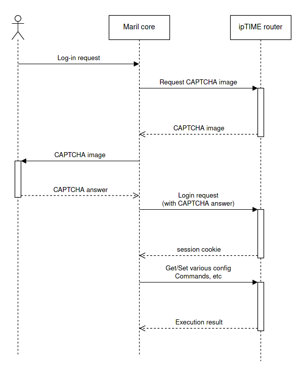

Mareel Core
Universal network device control module by using Javascript.
Installation
$ yarn add @mareel/core
# npm i @mareel/core
Documentation
This project uses typedoc to generate library documentation automatically.
Please run following command to generate library documentation (or, visit https://mareel-io.github.io/core/)
yarn doc
(EFM) CAPTCHA access flow

Access flow example
const maril = require('../');
async function main() {
// Initialize controller factory with target IP address
const efmController = new maril.EFMControllerFactory('http://192.168.0.1/');
// Get captcha challenge from EFM
// Implementer should hand CAPTCHA image to user(or automatic captcha solver) and get response from it.
const resp = await efmController.getCaptchaChallenge();
// Authenticate using CAPTCHA challenge response
await efmController.authenticate({
id: 'admin',
pass: 'admin'
}, {
filename: resp.name,
code: 'captcha_challenge_response_from_user'
});
// Get WLAN configurator with session cookie
const wlanconfigurator = efmController.getWLANConfigurator();
// Get device configuration of device 'wlan5g' using configurator
const deviceCfg = await wlanconfigurator.getDeviceCfg('wlan5g');
// Get interface configuration of 0th interface of 'wlan5g'
const ifaceCfg = await wlanconfigurator.getIFaceCfg('wlan5g', 0);
// Change Wi-Fi security parameters.
// Use WPA2-PSK CCMP only mode
ifaceCfg.encryption = 'psk2+ccmp';
// Use password 'Pa55w0rd!@'
ifaceCfg.key = 'Pa55w0rd!@'
// Set Wi-Fi SSID to 'MarilForever-5G'
ifaceCfg.ssid = 'MarilForever-5G';
// Enable interface
ifaceCfg.disabled = false;
// enable beacon broadcast (to show up in Wi-Fi scan result)
ifaceCfg.hidden = false;
// Apply new config
await wlanconfigurator.setIFaceCfg('wlan5g', 0, ifaceCfg);
}
main();
Example codes
Please refer to
https://github.com/Mareel-io/core/tree/main/examples
Implementation status
EFM Networks
Currently tested on A8004T model
Implemented features
WLAN interface
- SSID broadcast enable / disable
- IFace disable / enable
- SSID change
- WMM support enable / disable
- Set WPA2 personal wireless authentication (field value rework pending)
WLAN device
- Channel configuration
- Channel bandwidth
- TXpower (field value rework pending)
- Diversity configuration (partially working)
- Regdom configuration (field value rework pending)
- Beacon interval configuration
RPC support
Documentation in progress
Test client spinup
This library has simple dummy implementation to reduce real device interaction while integrating this into system
To spin up test client, do this
- Clone this repository
- Copy
config.yaml.exampletoconfig.yaml - Modify
config.yaml'sremotesection - Build this project using
yarn && yarn build - Run client using
yarn start
License